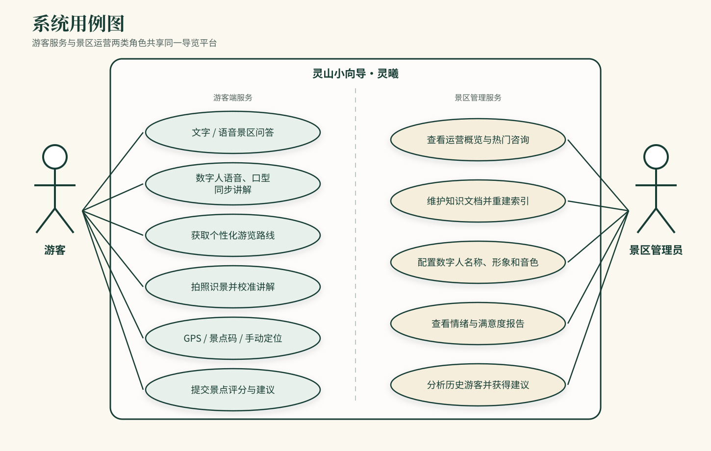
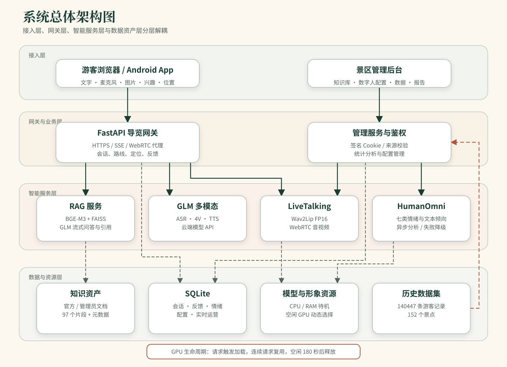
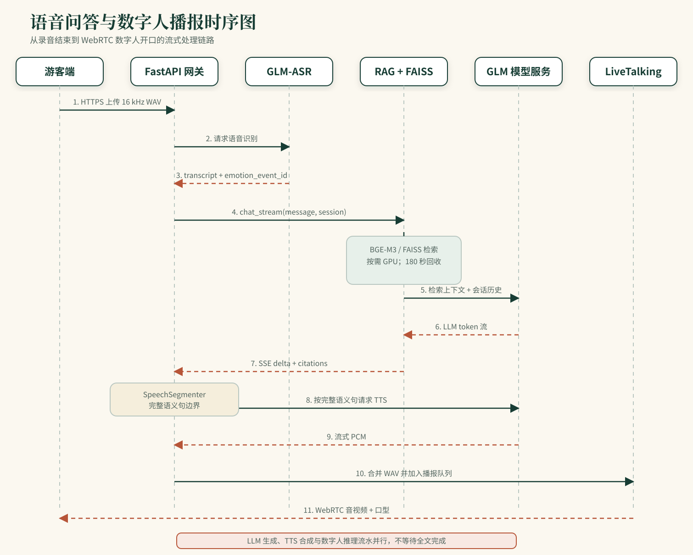
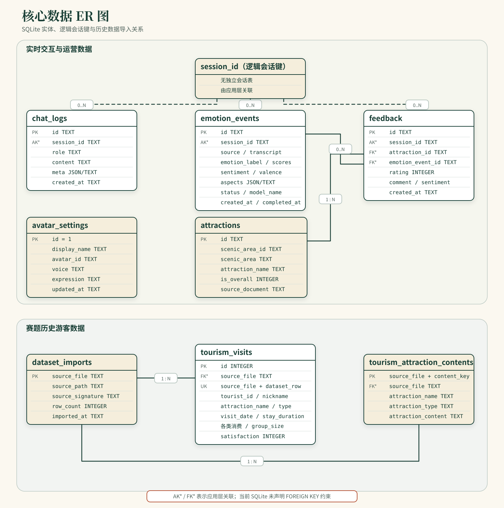

项目名称：景区导览服务 AI 数字人系统
文档类型：软件需求与设计说明
更新日期：2026-07-20
本文档说明“灵山小向导·灵曦”的软件需求、系统架构、核心流程、数据结构、接口、 部署和测试方案，作为开发、联调、测试与后续维护的统一依据。
系统包含游客端、景区管理端、导览 API、RAG 服务、语音与视觉模型接口、数字人服务、 情绪分析服务和本地数据存储。系统不负责票务交易、真实地图导航和景区硬件控制。
| 术语 | 说明 |
|---|---|
| RAG | 检索增强生成，先检索景区资料，再生成回答 |
| ASR / TTS | 语音识别 / 语音合成 |
| SSE | 服务端事件，用于流式返回模型文本 |
| WebRTC | 数字人实时音视频传输协议 |
| LiveTalking | 数字人口型驱动与音视频服务 |
| HumanOmni | 音视频情绪分析模型 |
系统为游客提供文字问答、语音问答、数字人讲解、路线推荐、拍照识景、定位辅助和 满意度反馈；为景区管理人员提供知识维护、数字人配置、服务统计和游客感受度分析。
| 角色 | 主要职责 |
|---|---|
| 游客 | 提问、听取讲解、查询路线、识别景点、提交反馈 |
| 内容管理员 | 维护景区知识文档并重建索引 |
| 运营管理员 | 查看访问量、热门咨询、响应时间和游客反馈 |
| 系统维护人员 | 启停服务、检查健康状态、管理 GPU 与日志 |
| 编号 | 模块 | 功能要求 |
|---|---|---|
| FR-01 | 景区问答 | 支持文字提问、连续追问、引用来源和资料不足时拒答 |
| FR-02 | 语音交互 | 浏览器录音后完成 ASR，并进入统一问答流程 |
| FR-03 | 数字人讲解 | 将回答按完整语义句合成语音并驱动口型，通过 WebRTC 播放 |
| FR-04 | 路线推荐 | 根据兴趣、时间和当前位置生成游览路线 |
| FR-05 | 拍照识景 | 视觉模型识别图片，再由景区知识库校准讲解 |
| FR-06 | 定位辅助 | 支持 GPS、景点码和手动选择，并在定位失败时降级 |
| FR-07 | 游客反馈 | 对具体景区或景点提交 1–5 分和文字建议 |
| FR-08 | 管理登录 | 管理员登录、会话验证和退出 |
| FR-09 | 知识管理 | 上传、查看、删除管理员文档并触发索引重建 |
| FR-10 | 数字人配置 | 配置显示名称、已安装形象和合成声音；表情由情绪策略实时驱动 |
| FR-11 | 运营分析 | 展示游客量、问答量、响应时间、热门主题和反馈 |
| FR-12 | 感受度分析 | 保存情绪、文本倾向、方面、置信度和分析状态 |
| 编号 | 类别 | 要求 |
|---|---|---|
| NFR-01 | 性能 | 热链路语音问答目标为 5 秒内开始数字人非静音播报 |
| NFR-02 | 可用性 | RAG、数字人或情绪模型失败时应明确提示或降级，不阻塞基础问答 |
| NFR-03 | 安全 | 管理接口鉴权；模型密钥仅在服务端保存；限制文件类型和大小 |
| NFR-04 | 可维护性 | API、RAG、数字人和分析模块独立部署，提供健康检查 |
| NFR-05 | 资源 | GPU 模型按需启用，空闲后释放 CUDA 上下文 |
| NFR-06 | 可追溯性 | 回答记录引用片段、响应时间、模型路线和会话标识 |

| 用例 | 前置条件 | 主流程 | 异常处理 |
|---|---|---|---|
| 景区问答 | 游客端可访问 API | 提交问题→检索知识→流式生成→展示引用 | RAG 不可用时返回明确错误 |
| 语音数字人问答 | HTTPS 麦克风授权成功 | 录音→ASR→RAG→TTS→数字人口型→WebRTC 播放 | 数字人不可用时回退文字或轻量模式 |
| 知识库更新 | 管理员已登录 | 上传文档→校验→切片→向量化→重建索引 | 文件不合法或重建失败时保留旧索引 |
| 运营分析 | 管理员已登录 | 查询日志、反馈、情绪和历史数据→聚合展示 | 数据不足时显示“暂无” |

系统采用分层服务架构。FastAPI 负责对外接口和业务编排；RAG、GLM 多模态、 LiveTalking 和 HumanOmni 作为独立服务；SQLite、FAISS、文档和模型资源分别管理。
| 模块 | 代码位置 | 职责 |
|---|---|---|
| 导览 API | services/api/app/ |
会话、问答、语音、视觉、路线、定位、反馈和管理接口 |
| RAG 服务 | llm/api.py、llm/rag/ |
文档切片、向量检索、提示构建、会话和模型生成 |
| 数字人服务 | LiveTalking/ |
会话管理、音频队列、口型推理和 WebRTC 输出 |
| 情绪分析 | services/emotion/ |
音视频情绪推理、文本降级和结构化结果 |
| 管理前端 | services/api/static/ |
登录、知识管理、数字人设置和数据展示 |
| 部署脚本 | deploy/ |
服务启动、TLS、TURN 和公网转发 |

模型回答采用 SSE 流式返回。FastAPI 使用语义边界切分完整句子，并行衔接 TTS 和 LiveTalking，避免等待全文完成。新问题到达时取消旧播报队列，防止音频重叠。
| 故障 | 系统处理 |
|---|---|
| RAG 服务不可用 | 返回 503 和明确错误，不生成无知识依据的答案 |
| LiveTalking 不可用 | 保留文字回答，前端切换轻量数字人或静态状态 |
| ASR 失败 | 提示重新录音，游客仍可使用文字输入 |
| 情绪模型失败 | 记录失败状态并使用文本倾向，不影响问答 |
| GPS 不可用 | 使用景点码或手动选择位置 |
| GPU 不足 | 选择其他空闲卡；无法分配时返回可恢复错误 |

session_id 是应用层逻辑会话键；标记为 AK*、FK* 的字段由应用层维护关联，
当前 SQLite 未声明外键约束。
| 数据表 | 主键 | 用途 |
|---|---|---|
chat_logs |
id |
保存用户与助手消息、元数据和时间 |
feedback |
id |
保存景点评分、意见和倾向 |
emotion_events |
id |
保存情绪任务、结果、模式和错误 |
avatar_settings |
固定 id=1 |
保存当前数字人配置 |
attractions |
id |
保存景区与子景点目录 |
tourism_visits |
id |
保存历史游客访问事实 |
dataset_imports |
source_file |
保存历史数据导入版本和行数 |
景区文档按标题和段落切片，BGE-M3 生成 1024 维归一化向量，FAISS IndexFlatIP
执行相似度检索。每个片段保留来源、标题和片段 ID，回答返回引用信息。管理员文档和
官方资料分开管理，索引重建成功后再替换当前索引。
| 方法 | 路径 | 说明 |
|---|---|---|
POST |
/v1/chat |
文字问答；支持普通 JSON 或 SSE 流式响应 |
POST |
/v1/asr |
上传录音并返回识别文本和情绪任务 ID |
POST |
/v1/tts |
将文本合成为 WAV |
POST |
/v1/vision/guide |
图片识别并结合 RAG 生成景点讲解 |
POST |
/v1/recommend |
生成个性化游览路线 |
POST |
/v1/locate |
解析 GPS、景点码或手动位置 |
POST |
/v1/feedback |
提交景点评分和建议 |
POST |
/v1/livetalking/offer |
建立数字人 WebRTC 会话 |
POST |
/v1/livetalking/heartbeat |
保持数字人会话并检测页面活跃状态 |
POST |
/v1/livetalking/close |
关闭会话并触发资源释放 |
| 方法 | 路径 | 说明 |
|---|---|---|
POST |
/v1/admin/auth/login |
管理员登录 |
POST |
/v1/admin/auth/logout |
注销管理会话 |
GET/POST/DELETE |
/v1/admin/kb/documents |
查看、上传和删除知识文档 |
GET/PUT |
/v1/admin/avatar |
查询和更新数字人配置 |
GET |
/v1/admin/analytics/overview |
查询实时运营概览 |
GET |
/v1/admin/analytics/historical |
查询历史游客分析 |
GET |
/v1/admin/emotion/status |
查询情绪任务统计 |
/v1/chat 的 SSE 响应包含 meta、delta、done 和 error 事件。meta 提供会话、
引用和数字人反应；delta 提供增量文本；done 提供总延迟；error 提供可显示错误。
当前比赛演示环境暂时采用“本地 GPU 计算节点 + 华为云公网转发节点”的两级部署： 核心服务运行在一台配备 4 张 NVIDIA RTX 3090 的本地服务器上，承担大模型、RAG、 数字人和多模态情感分析等计算；华为云服务器仅作为公网入口，转发游客端、管理后台、 HTTPS 与 WebRTC/TURN 流量，不承担模型推理。该拓扑属于当前演示部署方式，并非系统 运行的固定硬件要求，后续可迁移至景区私有服务器或云端 GPU 环境。
| 服务 | 端口 | 暴露范围 |
|---|---|---|
| 游客 HTTP/API | 8001 | 游客与接口调用方 |
| 游客 HTTPS + TURN/TCP | 8443 | 麦克风与 WebRTC 公网入口 |
| LiveTalking | 8010 | 仅内部 |
| RAG | 8020 | 仅本机 |
| 管理后台 | 8444 | 管理员 |
cd /home/gmn/codes/cup
bash deploy/start_livetalking.sh
bash deploy/start_api.sh
| 层次 | 内容 |
|---|---|
| 单元测试 | 文档切片、向量检索、会话、语义分段、鉴权和数据聚合 |
| 接口测试 | 问答、ASR、TTS、视觉、定位、反馈、管理和数字人接口 |
| 集成测试 | ASR→RAG→TTS→LiveTalking 完整链路 |
| 稳定性测试 | 服务重启、模型失败、页面关闭、心跳超时和 GPU 回收 |
| 安全测试 | 未登录管理访问、非法上传、超大请求和密钥泄露检查 |
| 项目 | 条件 |
|---|---|
| 知识问答 | 标准事实题准确率不低于 90%，回答提供知识引用 |
| 语音链路 | 热链路在 5 秒目标内开始非静音数字人播报 |
| 降级能力 | RAG、ASR、数字人或情绪模型失败时有明确反馈 |
| 管理隔离 | 未登录用户不能访问知识、配置和运营管理接口 |
| 资源释放 | 页面无活动或 worker 空闲后，相关 GPU 推理进程退出 |
| 数据真实性 | 无评分或无情绪结果时显示“暂无”，不得生成虚假指标 |